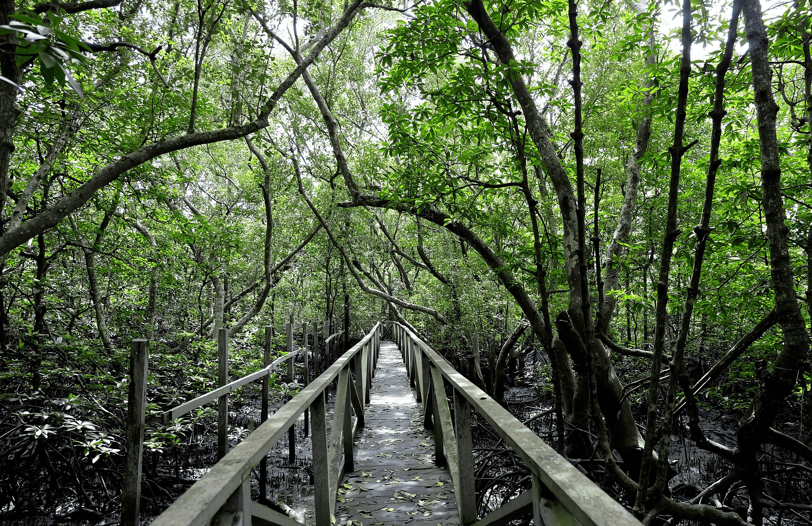
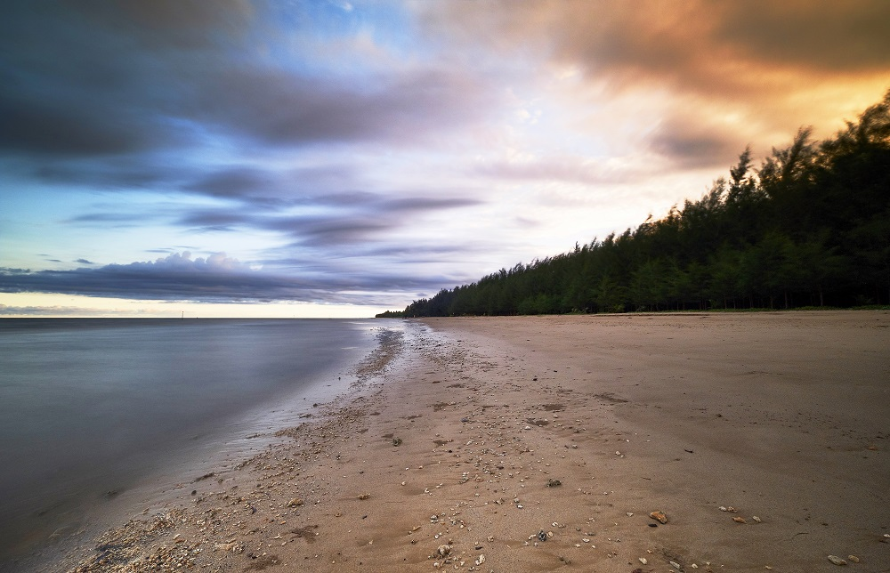
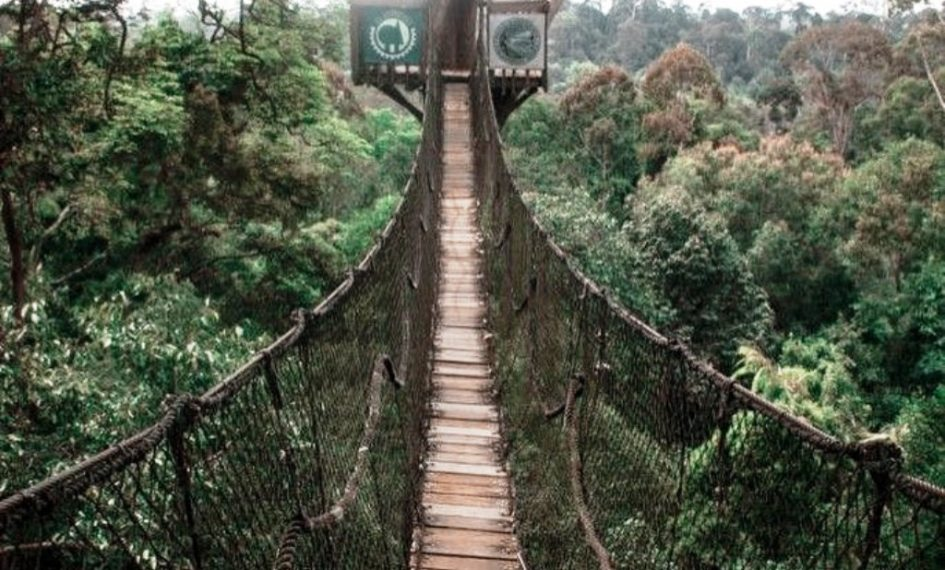
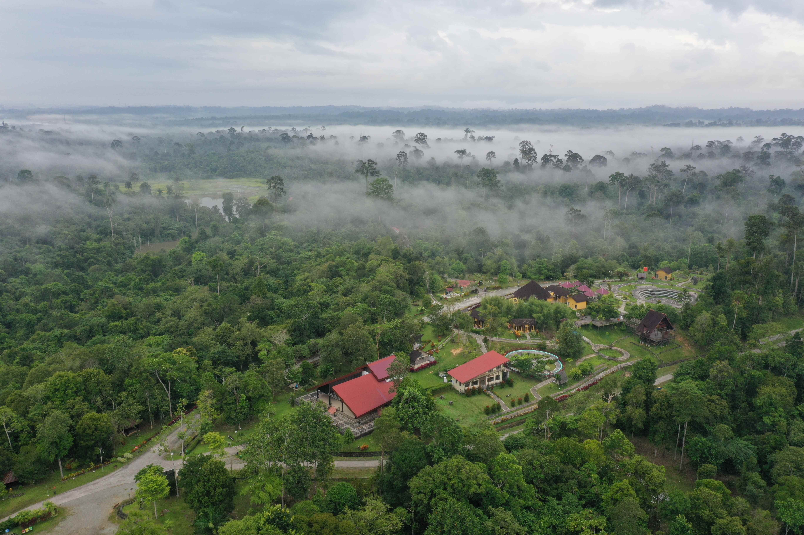
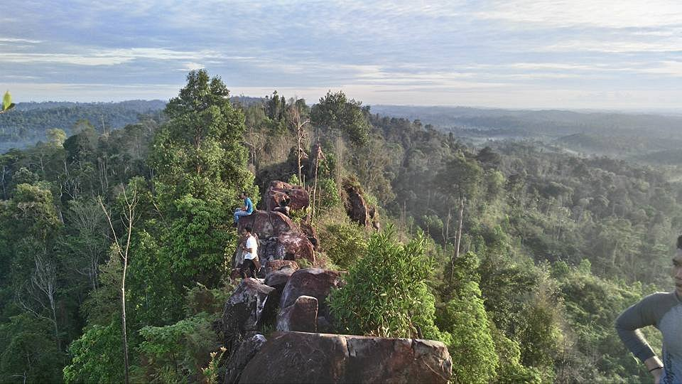

Danau Labuan Cermin merupakan salah satu obyek wisata mempesona yang terletak di Desa
Biduk-Biduk, Kabupaten Berau, Propinsi Kalimantan Timur....

Mangrove Margomulyo
Hutan Mangrove Margomulyo adalah buatan warga sekitar yang dinamai Kelompok Tani Teian
Lestari yang bekerja sama dengan Balai Lingkungan Hidup...

Pantai Lamaru
Pantai Lamaru merupakan salah satu obyek wisata andalan di Balikpapan,
Kalimantan Timur. Berada di Desa Teritip...

Bukit Bangkirai
Bukit Bangkirai menawarkan hutan hujan tropis yang sangat alami dilengkapi dengan ragam sarana lengkap, seperti
restoran, lamin untuk pertemuan, kolam renang, hingga cottage maupun jungle cabin....

Kebun Raya Balikpapan
Lokasi Kebun Raya Balikpapan yang merupakan bagian kawasan yang berada di dalam kawasan Hutan Lindung Sungai Wain,
ditunjuk sebagai Kawasan Hutan Dengan Tujuan Khusus (KDTK)...

Bukit Batu Dinding
Batu Dinding berada di Kota Minyak, Balikpapan. Tepatnya di Desa Bukit Merdeka, Kecamatan Samboja,
Kabupaten Kutai Kartanegara....